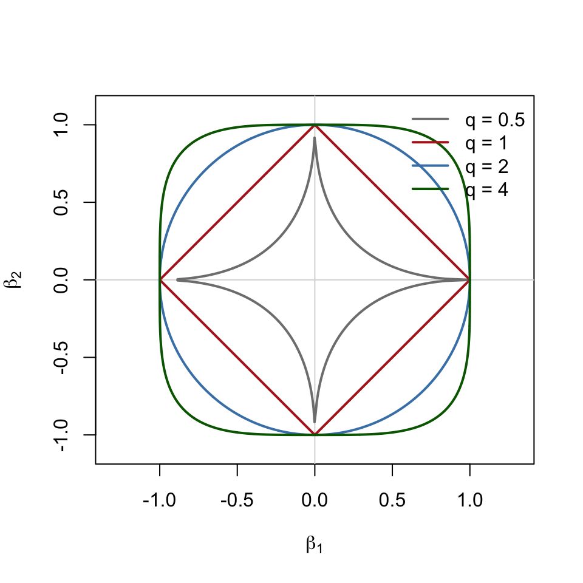

Paper: Tibshirani, R. (2011). “Regression shrinkage and selection via the lasso: a retrospective.” Journal of the Royal Statistical Society: Series B (Statistical Methodology), 73(3), 273–282. link
A victory lap, reflection, and some additional ideas about the original Lasso Paper 1996.
Key points to highlight: 1. Sparsity - And the extended applications from the table 2. L1 and Convex idea - contrast with Ridge 3. Why do you do relaxed lasso? - ‘S’ stands for screening, not selection! 4. Critiques - Bayesian - Correlated Predictors 5. Response - Known gap is inference
12.1 1. Sparsity
A model is sparse when most of its coefficients are exactly zero. Write the active set as \(S = \{j : \beta_j \ne 0\}\) with size \(s = |S|\). Sparsity means \(s \ll p\): only a few predictors actually matter.
The lasso is least squares with an \(\ell_1\) penalty (details in Section 2), and its defining feature is that it returns sparse solutions. It sets some coefficients exactly to zero, so shrinkage and variable selection happen in one step. For a single standardized predictor whose least-squares coefficient is \(z\), the lasso estimate is
so any coefficient with \(|z| \le \lambda\) is set to 0, not just made small.
Why sparsity matters. One of Tibshirani’s explanations for the slow uptake of the 1996 paper is that “the statistical and numerical advantages of sparsity were not immediately apparent.” Those advantages are:
Statistical: a sparse model is easier to interpret (you can name the predictors that matter) and estimates fewer parameters, so it has lower variance. Sparsity is also what makes \(p \gg n\) workable. Bühlmann’s discussion shows the lasso’s prediction error grows only like \(\sqrt{\log p / n}\) when the true \(\beta\) is sparse.
Numerical: algorithms can exploit sparsity. In coordinate descent, a coefficient that is 0 and stays 0 costs almost nothing to update (see the Computation notes below).
12.1.1 Extended applications (Table 1)
The paper’s Table 1 shows that the \(\ell_1\) idea carries over to other problems. Each method below puts an \(\ell_1\)-type penalty on a different object, so a different thing becomes sparse:
Method
Reference
Penalty / problem
What gets set to zero
Group lasso
Yuan & Lin (2007a)
\(\sum_g \lVert\beta_g\rVert_2\)
Whole groups of coefficients (e.g., all dummies for one factor)
Contrast with ridge. Ridge regression has the same form with a squared (\(\ell_2\)) penalty, \(\lambda\sum_j \beta_j^2\), or equivalently the constraint \(\sum_j \beta_j^2 \le t\). That one change in the penalty changes the behavior:
Ridge (\(\ell_2\))
Lasso (\(\ell_1\))
Penalty
\(\lambda\sum_j\beta_j^2\)
\(\lambda\sum_j\lvert\beta_j\rvert\)
Closed form?
yes: \((X^\top X + \lambda I)^{-1}X^\top y\)
no (needs an algorithm; see Computation notes)
Shrinks coefficients?
yes
yes
Sets coefficients exactly to 0?
no, only shrinks
yes, shrinks and selects
Correlated predictors
spreads weight across them
tends to pick one (see Section 4)
Bridge family and convexity. Tibshirani puts both methods into the bridge family of penalties \(\sum_j |\beta_j|^q\):
\(q\)
Method
Shrinks?
Selects (exact zeros)?
Convex?
\(0\)
Best-subset selection (penalty counts the nonzero coefficients)
no
yes
no
\(1\)
Lasso
yes
yes
yes
\(2\)
Ridge regression
yes
no
yes
Key point:\(q = 1\) is the smallest value of \(q\), so the one closest to subset selection, that still gives a convex problem. Convexity is what makes the lasso cheap to compute: any local minimum is the global minimum, and fast algorithms are guaranteed to find it. Best subset is the “ideal” selector, but it is a combinatorial search over \(2^p\) models. The lasso is the closest you can get to it while keeping the problem convex.
The figure below shows why the corners matter. The constraint regions \(\sum_j |\beta_j|^q \le 1\) have corners on the axes only when \(q \le 1\). A corner on an axis is a point where one coefficient is exactly zero. The RSS contours usually touch the lasso diamond first at a corner, which is where sparsity comes from. They touch the smooth ridge circle at a point where both coefficients are nonzero.
Code
theta <-seq(0, 2* pi, length.out =800)lq_ball <-function(q) {# points on the boundary of |b1|^q + |b2|^q = 1 r <- (abs(cos(theta))^q +abs(sin(theta))^q)^(-1/ q)cbind(r *cos(theta), r *sin(theta))}qs <-c(0.5, 1, 2, 4)cols <-c("grey50", "firebrick", "steelblue", "darkgreen")plot(NA, xlim =c(-1.1, 1.1), ylim =c(-1.1, 1.1), asp =1,xlab =expression(beta[1]), ylab =expression(beta[2]))abline(h =0, v =0, col ="grey85")for (k inseq_along(qs)) lines(lq_ball(qs[k]), col = cols[k], lwd =2)legend("topright", legend =paste("q =", qs), col = cols, lwd =2, bty ="n")

Figure 12.1: Unit ‘balls’ of the bridge penalty for several q. The lasso (q = 1) is the only convex region with corners on the axes, and the corners are what produce exact zeros.
12.3 3. Why do the relaxed lasso? The ‘S’ stands for screening, not selection
Bühlmann’s point. Bühlmann’s discussion summarizes the theory for \(p \gg n\), with true active set \(S_0 = \{j : \beta_{0j} \ne 0\}\). Each result needs stronger assumptions than the one before:
Good prediction needs almost no conditions on \(X\), only that the true \(\beta\) is sparse.
Accurate estimates of \(\beta\) need a “restricted eigenvalue” or “compatibility” condition. Roughly, small groups of columns of \(X\) can’t be too collinear.
Recovering exactly the right variables, \(P(\hat S = S_0) \to 1\), needs much more: the irrepresentable condition (irrelevant predictors can’t be too correlated with relevant ones) plus a “beta-min” condition (every true nonzero effect must be large enough to detect). Bühlmann calls this “rather unlikely” in practice.
What does hold under the weaker conditions is the screening property:
\[
\hat S \supseteq S_0 \quad \text{with high probability.}
\]
The lasso keeps all the important variables, plus some false positives. So Bühlmann suggests reading the second “s” in lasso (least absolute shrinkage and selection operator) as screening. When the lasso picks 24 genes in the riboflavin homework, the safe reading is “the true genes are probably among these 24”, not “these are the true genes”.
Why that leads to a second stage. The lasso uses one \(\lambda\) for two jobs at once:
Selection: a larger \(\lambda\) sets more coefficients to zero, so fewer false positives.
Shrinkage: a larger \(\lambda\) also shrinks the coefficients it keeps, so more bias toward zero.
Cross-validation chooses \(\lambda\) for prediction. That usually means a fairly small \(\lambda\), which lets in extra variables. You can’t get a sparser model without also over-shrinking the real effects. Two-stage methods separate the two jobs.
The relaxed lasso (Meinshausen, 2007; formula not in this paper) first runs the lasso at \(\lambda\) to get the selected set \(\mathcal M_\lambda\). It then refits only those variables with a smaller penalty \(\phi\lambda\):
\(\phi = 1\) is the ordinary lasso, and \(\phi = 0\) is OLS on the selected variables. This removes the shrinkage bias from the variables that survive the screen. (In R: glmnet(..., relax = TRUE).)
Tibshirani’s response: the relaxed lasso only re-estimates the nonzero coefficients. It does not prune the model, so it fixes the bias but not the false positives from screening. To get a sparser model he points to the adaptive lasso (weights \(w_j = 1/|\hat\beta_j^{\text{init}}|\), which penalize small effects more), or non-convex penalties such as SCAD and SparseNet. Bühlmann’s own approach is stability selection: rerun the lasso on many subsamples and keep only the variables chosen consistently, which controls the expected number of false positives.
12.4 4. Critiques
12.4.1 Bayesian (Holmes)
Holmes notes that the lasso is a MAP (posterior mode) estimate under independent Laplace (double-exponential) priors on the \(\beta_j\):
This view adds to the ridge contrast in Section 2:
Ridge: every coefficient gets the same, fixed prior variance.
Lasso: a fixed total variance budget is split up based on the data. Irrelevant predictors get \(\eta_j \to 0\), which pushes them to exactly zero and leaves more variance, and so less shrinkage, for the important ones.
His critiques:
The tails are too light. Unbiased estimates of large effects would need \(\eta_j \to \infty\), which the fixed budget allows only if \(t \to \infty\). So the Laplace prior always biases large true effects toward zero, and the lasso doesn’t have “oracle” properties. This is the same bias the relaxed lasso tries to fix (Section 3). It also motivates heavier-tailed priors like the horseshoe.
Reporting the posterior mode is hard to justify. The posterior mode is only the optimal answer under a contrived 0–1 loss. A single point estimate also hides uncertainty, where a full Bayesian analysis would average over the unknowns.
His conclusion: if you are going to add subjective penalties, it is “simpler and more natural to do so within a Bayesian paradigm.”
12.4.2 Correlated predictors
Holmes’s second concern, which he illustrates with genomics, is correlation:
In a group of strongly correlated predictors, the lasso tends to keep one and set the rest to zero, and which one it keeps can change from sample to sample.
Weak but real predictors that are correlated with stronger ones may be dropped completely.
A Bayesian analysis can instead report joint posterior inclusion probabilities that show which predictors trade off with each other (Clyde & George, 2004; Park & Casella, 2008).
This links to Section 3. Bühlmann’s irrepresentable condition, which is needed for exact selection, is a condition on exactly this kind of correlation between relevant and irrelevant predictors.
12.5 5. Response: the known gap is inference
Tibshirani’s rejoinder:
On the Bayesian critique: under the Laplace prior, the posterior mean and median are not sparse. The Bayesian lasso (Park & Casella, 2008) gives up the selection property. Bayesian sparsity needs a prior with point mass at zero, such as spike-and-slab (George & McCulloch, 1993), which leads to non-convex, computationally daunting problems. That is the convexity tradeoff from Section 2 again. He also questions Holmes’s constrained-variance prior: “is this prior with a constraint something which a statistician might think is reasonable on its own?”
On correlated predictors: he agrees the problem is important, but prefers better penalties to full Bayes: the group lasso, the elastic net, or covariance-regularized regression (“scout”).
On screening: see Section 3. The adaptive lasso is promising, while the relaxed lasso doesn’t prune the model.
The known gap: inference. Tibshirani closes by saying “we need better tools for inference with the lasso”:
We need reliable ways to assess the sampling variability of \(\hat\beta^{\text{lasso}}\).
Ordinary standard errors would be a start, but they are not enough. Because the lasso sets coefficients exactly to zero, the sampling distribution of each \(\hat\beta_j\) is a mixture with a point mass at zero, so it is not approximately normal.
The bootstrap might be the fallback, but how to apply it here, and what its properties are, still had to be worked out.
Bühlmann’s multiple-testing and p-value work for high-dimensional models is an early step in this direction.
12.6 General notes
12.6.1 History, and why it took a while to catch on
Inspiration: Breiman’s non-negative garrote (1995). First fit OLS to get \(\hat\beta_j\), then shrink each one by a factor \(c_j \ge 0\) with \(\sum_j c_j \le t\). Because it depends on the OLS estimates, it breaks down when OLS is unstable or doesn’t exist. Tibshirani merged the two stages and constrained \(\beta\) directly. Related work from the same period: bridge regression (Frank & Friedman, 1993) and basis pursuit (Chen, Donoho & Saunders, 1998).
Why the paper sat largely ignored for years. Tibshirani’s guesses:
Computation in 1996 was slow.
The algorithms were black boxes (quadratic programming) with no statistical intuition until LARS in 2002.
Neither he nor the community yet saw the statistical and numerical value of sparsity.
Large problems (large \(N\), large \(p\), or both) were rare.
There was no R ecosystem for fast, easy sharing of software.
12.6.2 Computational advances
The history of lasso computation goes in three steps:
Off-the-shelf quadratic programming (1996). Correct, but it scales poorly and gives no insight into the problem.
LARS / homotopy (Osborne et al., 2000; Efron et al., 2002/2004). The solution path \(\hat\beta(\lambda)\) is piecewise linear in \(\lambda\), so the whole path can be computed for about the cost of one least-squares fit. LARS also connects the lasso to forward stagewise regression, which helped explain older stepwise methods.
Coordinate descent (Fu, 1998; Friedman et al., 2007, 2010; Wu & Lange, 2008). Cycle through the coefficients one at a time and update each with a closed-form soft-thresholding step. The method is “extremely simple and fast” and works especially well when the solution is sparse, because most coefficients stay at zero and their updates cost almost nothing. This is what glmnet uses, and it is what we call in the homework.